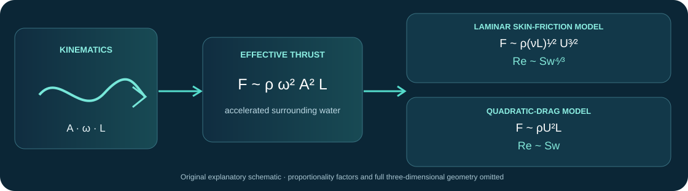
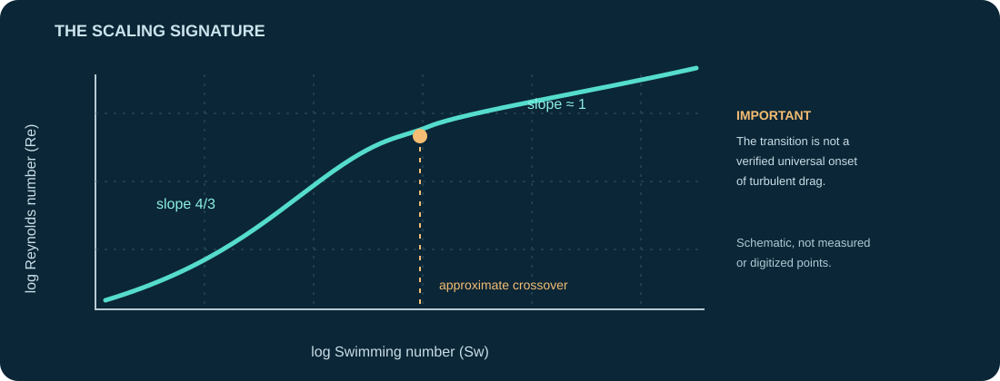

What the paper actually demonstrates
One-sentence thesis. Across widely different inertial undulatory swimmers, a balance between effective fluid-acceleration thrust and hydrodynamic resistance predicts a compact relationship between swimming gait and cruising speed.
Re ∼ Sw4/3 (lower Re) · Re ∼ Sw (higher Re)U: forward speed · L: length · A: tail amplitude · ω: angular tail frequency · ν: kinematic viscosity
| Claim | Original basis | Epistemic status |
|---|---|---|
| Cross-species gait/speed data follow two approximate exponents | Fig. 2; compiled measurements | Observed correlation under chosen normalization and grouping |
| The force balance predicts exponents 4/3 and 1 | Fig. 1, Eqs. 1–2 | Derived model using assumed thrust and drag scalings |
| Separate numerical systems reproduce both regimes | Fig. 3; 2D and 3D simulations | Computational corroboration within tested modeling regimes |
| Higher-Re behavior reflects pressure-drag dominance | Boundary-layer and thrust arguments | Mechanistic inference not directly isolated |
| The curve separates inefficient from unattainable swimming | Discussion, page 761 | Optimality hypothesis not formally established |

The analysis describes approximately steady, slender, inertial undulatory swimming with small relative body-motion amplitude and a body-wave wavelength scaling with body length. It does not directly describe acceleration, maneuvering, intermittent hunting, or metabolic expenditure.
NABC: a real 2014 scientific need
Need
Unify the swimming kinematics of fish, larvae, amphibians, reptiles, diving birds and marine mammals across vastly different body sizes.
Approach
Elementary added-mass-like thrust and classical hydrodynamic drag expressed with Re and Sw.
Benefit
Two compact, interpretable scaling exponents summarize over 1,000 previously published observations.
Competition
Bainbridge's body-length/tail-frequency correlation (1958), Lighthill's elongated-body theory (1971), established Strouhal-number analyses and more detailed CFD.
Unresolved need
Disentangle shared dimensional correlations from mechanism-specific effects, and predict efficiency and capture performance under controlled kinematic constraints.
Improved approach
Independently vary gait, morphology, viscosity and muscle/actuator power; measure fluid stresses and input work, not speed alone.
Durable benefit
A widely used first-order benchmark for aquatic propulsion and bio-inspired robotics.
Current competition
Three-dimensional fluid–structure interaction, muscle-limited gait models, foil energetics and optimization, and controlled autonomous robotic swimmers.
Not an apples-to-apples performance contest: the anchor offers explanatory scaling, not a new apparatus with measured throughput, sensitivity or power savings. For energetics, use matched input mechanical power, body geometry, Reynolds number and cost-of-transport definitions.
An explanatory synthesis, not a new instrument
Common phase space
Normalize forward and transverse motion into Re and Sw, exposing broad trends across taxa.
Two drag balances
Couple effective fluid-reaction thrust to different speed dependences for boundary-layer shear and drag.
No special instrument
Literature measurements, dimensional arguments and numerical simulation; no proprietary material or novel sensor was required.
The enabling advance was integration of known hydrodynamic mechanisms with a large, taxonomically broad measurement set. That synthesis was sufficient to produce the apparent cross-species collapse, but it was not sufficient to identify one unique thrust mechanism. Earlier constant-Strouhal observations already implied much of the high-Re relationship.
Classification: Broad mechanical explanation and analytic synthesis. Neither a newly discovered fundamental fluid law nor a demonstrated efficiency/performance improvement.
What each figure can — and cannot — prove
Fig. 1 · Organisms and thrust–drag schematic (paper pp. 758–759)
Supports: Dimensional force-balance reasoning and the scope of the proposed model.
Weakness: An accelerated water mass and its projected reaction force are assumed rather than measured; the figure does not partition viscous and pressure drag.
Essential assumptions: slender body, A/L small, deformation wavelength O(L), effectively planar motions and steady mean balance. Alternative mechanisms include leading-edge suction, pressure distribution and gait-specific vortical dynamics.
Fig. 2a · Cross-taxa data collapse (p. 760)
Supports: Approximately eight decades of variation in Re organized by Sw, with fitted slopes 1.31 and 1.02 and reported R² near 0.95 and 0.99.
Weakness: The axes share L/ν, body amplitude often covaries with length, and the 1,002 observations are not 1,002 independent biological systems.
The completed review's SI audit reports 100 lower-Sw and 902 higher-Sw records, respectively; a hierarchical analysis and held-out species validation would be more discriminating than pooled regression. Some amplitudes were estimated from published sources.
Fig. 2b · Strouhal trends (p. 760)
Supports: Weakly Re-dependent St at lower Re and an approximately constant value at higher Re.
Weakness: Constant St was substantially precedented. There is also a 2π convention issue between the definition using f and the subsequent use of ω.
With St = fA/U and ω = 2πf, the exact identity is Sw = 2π Re St, not simply Sw = Re St. Exponents are unchanged, numerical prefactors are not.
Fig. 3 · Two- and three-dimensional swimmer simulations (p. 760)
Supports: Useful checks under prescribed kinematics and viscosity variation; reported exponent values match the model.
Weakness: Predetermined gaits and geometry limit generality. Two-dimensional computations cannot by themselves establish a three-dimensional turbulent boundary-layer transition.
This is more discriminating than the pooled animal correlation, but it still cannot uniquely attribute a linear exponent to pressure drag rather than other approximately quadratic resistance.
Internal consistency does not prove unique causality

| Test / metric | Anchor result | Forensic interpretation |
|---|---|---|
| Lower-Re exponent | 4/3 theory; 1.31 experimental fit | Close pooled agreement, independent larval counterexample; n=100 in completed SI audit |
| Higher-Re exponent | 1 theory; 1.02 experimental fit | Consistent with constant St, not a unique signature of pressure-drag dominance |
| Regression goodness of fit | R²≈0.95 and 0.99 | Logarithmic cross-species collapse, not percentage prediction error or independent accuracy |
| Two-dimensional simulation | Re≈0.04 Sw4/3; Re≈0.43 Sw | Broad agreement within imposed undulation parameters |
| Three-dimensional simulation | Re≈0.02 Sw4/3; Re≈0.26 Sw | Agreement across numerical sources, not identical body/flow regimes |
| Crossover | Re≈3,000 | Phenomenological crossover; no direct universal boundary-layer stability threshold |
| Energy efficiency | Not measured or optimized | Cannot infer metabolic efficiency or a cost-of-transport optimum |
How the result aged, 2014–2026
Larval-zebrafish experiments question universal low-Re scaling
Van Leeuwen et al. measured 2–5-day larval zebrafish and reported St–Re behavior substantially steeper than the −1/4 prediction; the completed review notes a fitted exponent about −0.741, with a reported 95% confidence interval approximately −1.250 to −0.389. J. R. Soc. Interface (2015). Independent, directly relevant disagreement in a restricted species/age/gait regime.
Efficient swimming depends on more than Strouhal alone
Saadat et al. described Strouhal and relative-amplitude ranges associated with efficient swimming. This is a complementary efficiency argument, not an independent proof of the anchor's turbulence threshold. Phys. Rev. Fluids (2017).
Fluid drag as a determinant of efficient cruising
Floryan et al. revisited the narrow Strouhal operating range and efficiency in swimming/flying systems. It supports broad convergence but does not reproduce both 2014 exponents as independent tests. PNAS (2018).
Similar scaling, different thrust generation and energetic costs
Das et al. simulated self-propelled flapping foils with different translational constraints. Comparable St–Re relations arose despite distinct thrust-generation balances and divergent input-power requirements. Published online 2021. J. Fluid Mech. (2022).
Muscle constraints offer a fuller explanation of frequency selection
Sánchez-Rodríguez et al. analyzed roughly 1,200 published observations of undulatory swimming and explored body-size limits on beating frequency and speed. Coauthor overlap makes this an extension, not fully independent reproduction. Nat. Commun. (2023).
Speed and cost-of-transport optima need not coincide
Anastasiadis et al. used a bio-inspired robotic swimmer to vary gait and measure performance trade-offs. This directly limits the interpretation of one kinematic law as a complete efficiency optimum. Sci. Rep. (2023).
| Anchor claim | Retrospective status | Why |
|---|---|---|
| Speed depends strongly on amplitude and beating frequency | Supported | Multiple biological and robotic studies |
| Higher-Re approximately constant St | Supported / precedented | Robust broad trend, already present before 2014 |
| Universal lower-Re 4/3 exponent | Contested | Independent larval data deviate |
| One universal thrust–drag mechanism | Not uniquely identified | Different thrust pathways can share scaling |
| Universal turbulent transition near Re≈3,000 | Unresolved | No direct pressure/shear-partition verification |
| Optimal-speed/efficiency boundary | Not demonstrated | Unspecified power objective and constraints |
Automated citation labels are leads rather than physical confirmation. Follow-up descriptions are restricted to what the completed dossier and inspected primary sources support. No exhaustive meta-analysis or replication census was conducted.
Influence is real; universal optimality is unproven
Citing publications
Scite-indexed publications returned for the DOI in the 2 Nov 2026 query; database dependent, not an independent replication count.
Citation statements
Indexed contexts; 56 supporting and five contrasting as automatically classified. Most statements are mentions or other contexts.
Ongoing reuse
Scaling cited in robotic-fish design, CFD models, flapping foil theory and locomotion comparisons.
The durable contribution is a compact language for cross-species speed scaling and an easy baseline for robotic swimmers. This should be separated from evidence that the proposed turbulence threshold or optimality bound became accepted fundamental laws.
Evidence-based scorecard
Scale 1–5 (1 very weak, 3 credible, 5 exceptional). This is a retrospective evaluation, not a summed or normalized universal ranking. Performance advance is not a relevant numerical benchmark for a theory-first paper.
Each bar is a separate judgment. The bars are visual aids, not evidence derived directly from the paper. No composite score is calculated.
Nine questions that could change the verdict
Do the exponents survive hierarchical reanalysis?
Refit with independent study/species effects, uncertainty and leave-one-species-out prediction; compare to pooled 1.31/1.02.
Why do independently measured larvae deviate?
Test whether changes in yaw, development, body-wave amplitude or transitional drag explain the non-4/3 St–Re exponent.
What proves a drag-regime crossover?
Measure surface shear stress, pressure distribution and boundary-layer state across the proposed Re≈3,000 transition.
Can a constant-St null model explain Fig. 2?
Account explicitly for shared L/ν and A∝L covariance, then compare held-out speed predictions.
Does 3D flow exhibit the proposed turbulent mechanism?
Run controlled 3D simulations with boundary-layer diagnostics rather than inferring turbulence from a 2D scaling exponent.
Are the exponents stable across gait variations?
Vary wavelength, body flexibility, recoil, fin geometry and kinematic phase independently at fixed Sw.
Are competing exponents statistically distinguishable?
Compare slopes 4/3, 10/9 and 1 using uncertainty-aware physical and predictive models.
What objective is actually optimized?
Define mechanical-power or metabolic constraints and directly calculate speed, efficiency or cost of transport optimum.
Can a controlled swimmer cross the proposed bound?
Test autonomous, instrumented robots with measured input work and pressure/shear components across body shapes and gaits.
A strong phenomenological law, not a completed theory of optimal swimming
A single physically motivated construction organizes roughly a thousand heterogeneous observations, and controlled viscosity variation in numerical swimmers supports the characteristic exponent change. The simple model is valuable even when details of individual taxa differ.
The largest data regime substantially restates constant St; the smaller regime has independent empirical counterexamples; near-linear scaling does not uniquely identify pressure drag; optimality requires an explicit objective and constraints absent from the model.
Most decisive test: A freely swimming, instrumented robotic swimmer in which viscosity, gait and power are independently controlled, with measured stresses, wake momentum, speed and actual input work. Such an experiment would disentangle kinematic scaling, physical drag mechanism and energetic optimality.
Bottom line: A consequential and elegant Nature Physics explanation of a broad kinematic pattern. Its central phenomenology has endured better than the claims of universal mechanism or an attained performance limit.
Primary references and audit limitations
The anchor was read in full as a four-page article, including its figure captions. The original completed review also reports audit findings from the supplementary regression table and simulation methods. The supplementary raw dataset was not independently re-fitted in this webpage; nor were all supplementary figures re-rendered. Later papers were reviewed selectively, not in an exhaustive systematic search.
Gazzola, M., Argentina, M. & Mahadevan, L. Scaling macroscopic aquatic locomotion. Nat. Phys. 10, 758–761 (2014). doi:10.1038/nphys3078. Anchor: pp. 758–761, Figs. 1–3; supplementary Fig. S11 as documented in the completed review.
Bainbridge, R. The speed of swimming of fish as related to size and to the frequency and amplitude of the tail beat. J. Exp. Biol. 35, 109–133 (1958). Cited antecedent in the anchor.
Lighthill, M. J. Large-amplitude elongated-body theory of fish locomotion. Proc. R. Soc. Lond. B 179, 125–138 (1971). Cited antecedent in the anchor.
Taylor, G. K., Nudds, R. L. & Thomas, A. L. R. Flying and swimming animals cruise at a Strouhal number tuned for high power efficiency. Nature 425, 707–711 (2003). Cited antecedent in the anchor.
Anderson et al. The boundary layer of swimming fish. J. Exp. Biol. (2001). doi:10.1242/jeb.204.1.81. Historical boundary-layer evidence; not a direct repeat of the 2014 fit.
van Leeuwen et al. How body torque and Strouhal number change with swimming speed and developmental stage in larval zebrafish. J. R. Soc. Interface (2015). doi:10.1098/rsif.2015.0479. Independent, quantitative lower-Re challenge.
Saadat et al. On the rules for aquatic locomotion. Phys. Rev. Fluids (2017). doi:10.1103/PhysRevFluids.2.083102. Efficiency-relevant companion framework.
Floryan et al. Efficient cruising for swimming and flying animals is dictated by fluid drag. PNAS (2018). doi:10.1073/pnas.1805941115. Independent analysis of drag and efficiency.
Das et al. Contrasting thrust generation mechanics and energetics of flapping foil locomotory states characterized by a unified scaling. J. Fluid Mech. (2022; online 2021). doi:10.1017/jfm.2021.910. Mechanistic non-uniqueness and energetic trade-offs.
Sánchez-Rodríguez et al. Scaling the tail beat frequency and swimming speed in underwater undulatory swimming. Nat. Commun. (2023). doi:10.1038/s41467-023-41368-6. Later modeling with overlap in original authorship.
Anastasiadis et al. Identification of the trade-off between speed and efficiency in undulatory swimming using a bio-inspired robot. Sci. Rep. (2023). doi:10.1038/s41598-023-41074-9. Robotic speed/efficiency distinction.
Citation indicators: Scite DOI search, 2 November 2026; 395 citing publications, 472 indexed statements, 56 labeled supporting and five contrasting. These labels are not adjudicated scientific verdicts. Author-specific paper notice check did not surface a correction or retraction, but coverage is not guaranteed. Original diagrams on this page are newly authored illustrations and are not published experimental figures. © Original review commentary, 2026.